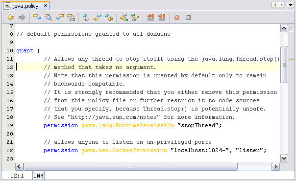
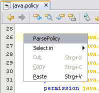
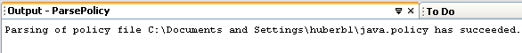

The module PolicySupport supports editing, and viewing policy files.
The policy file is displayed using syntax highlightning.
You can take use of the PolicySupport module by following these steps:
.policy.
The opened policy file has following features:
The following screen-shot shows a typical syntax hightlighted policy file.

You can verify the policy file by invoking a ParsePolicy action.
This action will parse the policy file, using policy parser
provided by the Java runtime.
Parsing errors are writen to the output window into the window tab
named Policy.
You can activate parsing the policy file by doing following steps:
The screenshot belows shows the popup menu of the policy editor.
The screenshot below shows the result of successfully parsing a policy file.
Note: The policy file is read from the filesystem. Thus not-saved changes of the policy file are not taken into account when parsing takes place.
You can find a detailsed description about policy files in the Java SDK documentation.
The paragraphs below are a short extract of the Java SDK documentation about policy files.
The policy configuration file(s) for an SDK installation specify what permissions (which types of system resource accesses) are allowed to code from a specified code source, and executed as a specified principal.
For an applet (or an application running under a security manager) to be allowed to perform secured actions (such as reading or writing a file), the applet (or application) must be granted permission for that particular action. In the Policy reference implementation, that permission must be granted by a grant entry in a policy configuration file. See the "Java Security Architecture Specification" for more information. (The only exception is that code always automatically has permission to read files from its same (URL) location, and subdirectories of that location; it does not need explicit permission to do so.)
A policy configuration file essentially contains a list of entries. It may contain a "keystore" entry, and contains zero or more "grant" entries.